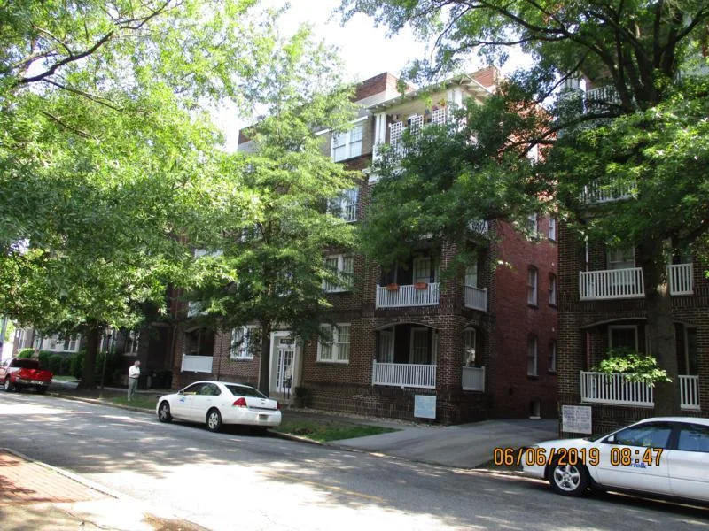
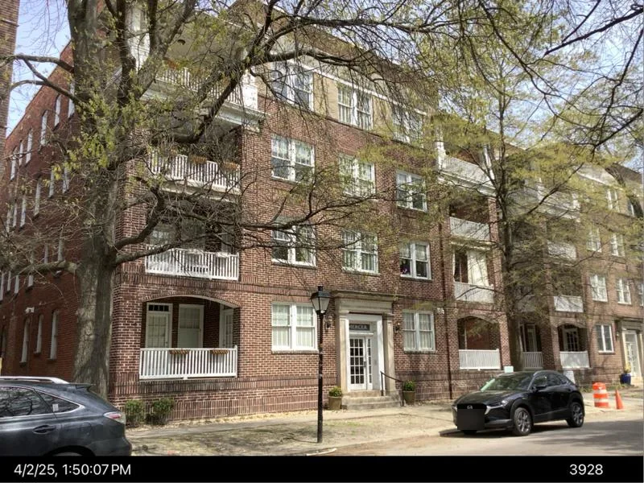
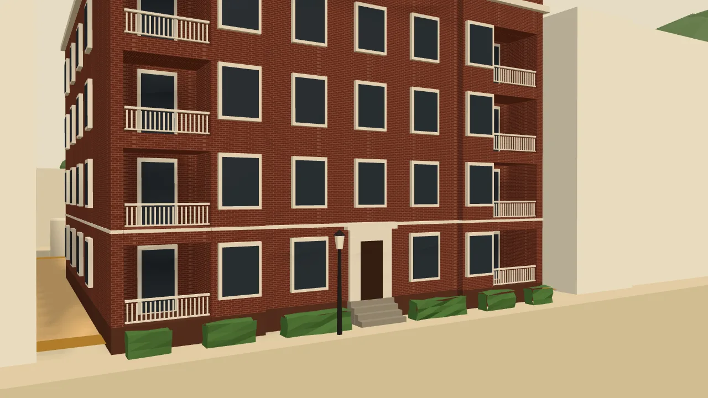
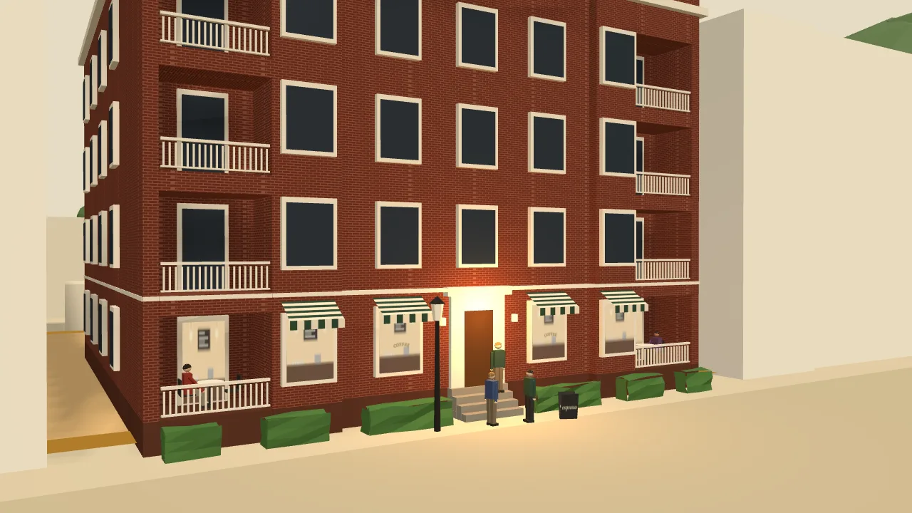
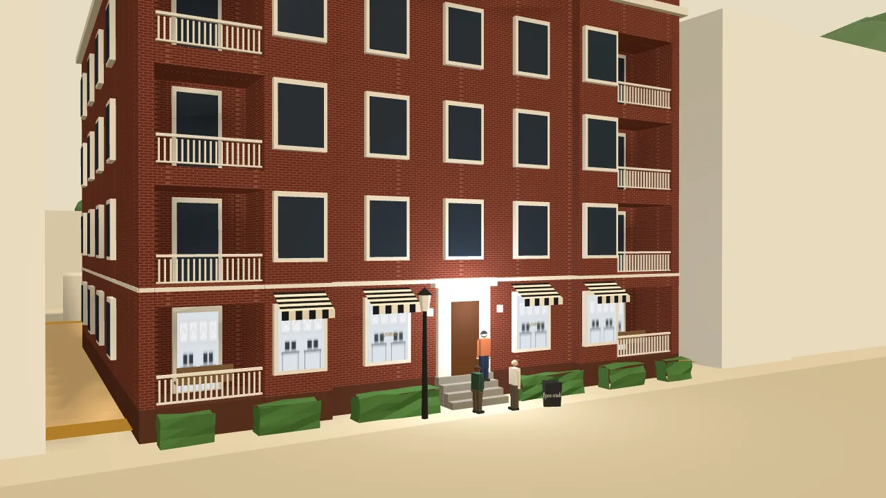

The building
- Built
- 1919
- Use today
- Apartments (assessed in the class for 12 to 48 units)
- Building
- 16,344 sq ft
- Lot
- 7,049 sq ft
- Zoning
- HC-G2
- Street
- W Princess Anne Road, classed arterial/collector
The assessor's photos, from June 2019 and April 2025, show four floors of dark red brick over a raised basement. Porches are stacked in the outer half of both end bays, with white balustrades on every floor. There are paired sash windows, and a stone surround frames the centre entrance at the top of a short flight of steps. Big street trees shade the front.


Photos: City of Norfolk Real Estate Assessor, from the property card for this parcel. We host copies with license plates blurred, as our open letter describes. Facts from the City's FY2026 assessment on Norfolk Open Data.
What the first floor could hold
We built it by hand for the parcel explorer, from the City's building footprint and these photos. Here the shop takes the first floor and the apartments stay above. The first-floor windows light up and carry the shop's lettering, canvas awnings shade them, and each of the two first-floor porches gets a table. The design guidelines put signs on sign bands, windows and awnings, so nothing projects from the wall, and the entrance surround stays clear.



Open 740 W Princess Anne in the explorer →
The rule
740 W Princess Anne Road is in HC-G2. Table 3.6.11 of the zoning ordinance leaves restaurants, retail goods establishments and offices blank in HC-G2, and a blank means prohibited. No permit can authorize them, at any price, even on the first floor of a building that already holds a dozen or more apartments. Across the district line in HC-G3, the same table allows all three: offices by right, and restaurants and retail by right or with a conditional use permit.
The plan
NFK2050, adopted December 9, 2025, puts HC-G2 in its Sustain – Traditional place type and lists "Commercial/retail, small-scale office" as a secondary land use there (p. 92). "The Secondary, non-residential uses envisioned for the Sustain areas are appropriate primarily along arterials and collector streets, preserving the residential character of the neighborhood interiors" (p. 69). The City's street layer classes West Princess Anne Road in front of 740 as an arterial or collector street. As at 715 Colonial, the caveat is that the plan encourages small-scale retail "at key nodes or intersections" (p. 93), and 740 is mid-block.
What it would take
Policy Brief No. 1 proposes amending Table 3.6.11 to permit six small uses by right in HC-G2, under performance standards. Nothing about the building would have to change for the first floor to open. The amendment would only make a shop under apartments a lawful thing to do here.
This is an illustration, not a proposal for this property. We haven't spoken with its owners or its tenants, and nothing on this page says anyone plans a shop here.
SOURCES: City of Norfolk Real Estate Assessor, FY2026 assessment for parcel 02729600 (effective July 1, 2025), via Norfolk Open Data, and street photos dated June 6, 2019 and April 2, 2025 (gisshare.norfolk.gov); City of Norfolk building footprints, parcels, zoning and street centerlines, OpenData GIS services (the street layer's right-of-way class); Norfolk Zoning Ordinance, Table 3.6.11 and § 4.2; NFK2050 Comprehensive Plan, adopted December 9, 2025 (Ordinance No. 50201), pp. 69, 92, 93; Norfolk Historic District Design Guidelines, adopted by the Architectural Review Board May 26, 2026. All checked November 2026.